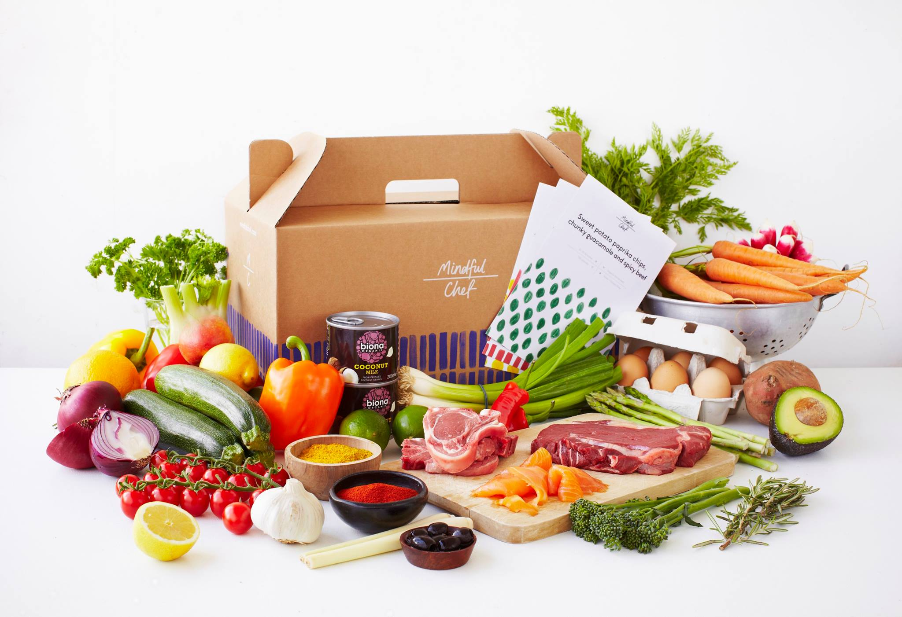

Delish Food

Brief History
Tasty Bakery, has been created in 2017. It has been created by a group of UCC E-Business entrepeneur students. The company propose a product mix which aim to fulfill families, students and workers requirements in centre Cork.
The soul and passion of the baker transcends into the loaf that is shared with the community.
The bread made by Tasty Bakery has unique characteristics because of the use of available regional ingredients.
The philosophy of the bakery is to enhance both the natural products and the flavor of the various grains.
The baked goods are created from apples, cranberries and hazelnuts, as well as wheat, rye, barley and buckwheat flour.
This is bread that celebrates the tradition of breaking bread with family and friends.
Mission
To be a point of reference of the typical latin food and native, as well as also of meats to the
gridiron where simultaneously products and quality services are offered, improving constant its
processes in the search of customers satisfaction across a qualified personnel
and with the collaboration of our suppliers so much internal as day pupils.
Vision
Our goal is to give our customers a delicious experience through food and transport
them to places from our continent and let them learn a little of Latin America